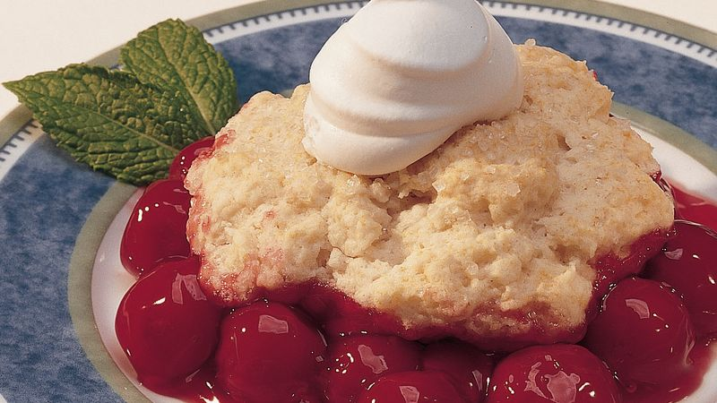
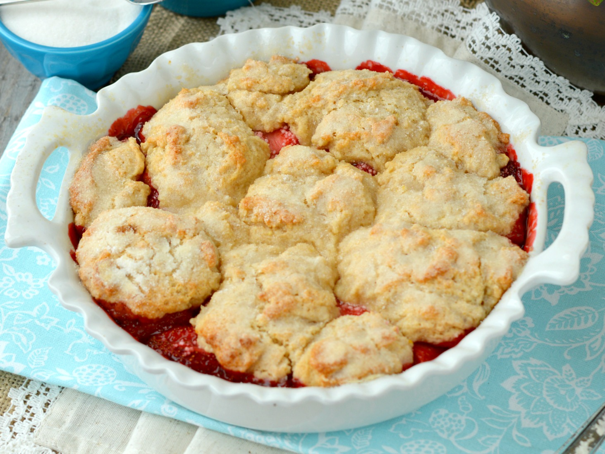
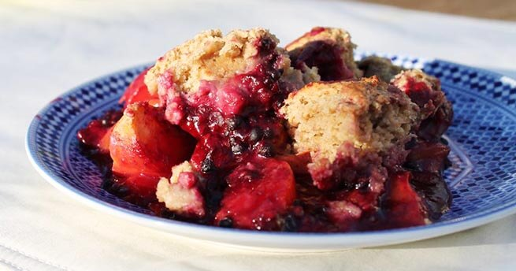

Welcome to The Cobbler Section

Blackberry Cobbler
See there how easy that is. Let's make some happy little clouds in our world. Let's do that again. Don't forget to tell these special people in your life just how special they are to you.
Cherry Cobbler
We spend so much of our life looking - but never seeing. Van Dyke Brown is a very nice brown, it's almost like a chocolate brown. Mix your color marbly don't mix it dead. You can't make a mistake. Anything that happens you can learn to use - and make something beautiful out of it.
Strawberry Cobbler
Don't fight it, use what happens. We're trying to teach you a technique here and how to use it. We artists are a different breed of people. We're a happy bunch.

Cherry Cobbler
Look around, look at what we have. Beauty is everywhere, you only have to look to see it. Let's put some happy little clouds in our world. Don't hurry. Take your time and enjoy. Isn't it fantastic that you can change your mind and create all these happy things?
Blueberry Peach Cobbler
All you have to do is let your imagination go wild. Everyone needs a friend. Friends are the most valuable things in the world. I'll go over the colors one more time that we use: Titanium white, Thalo green, Prussian blue, Van Dyke brown, Alizarin crimson, Sap green, Cad yellow, and Permanent red. Put your feelings into it, your heart, it's your world. You can get away with a lot.